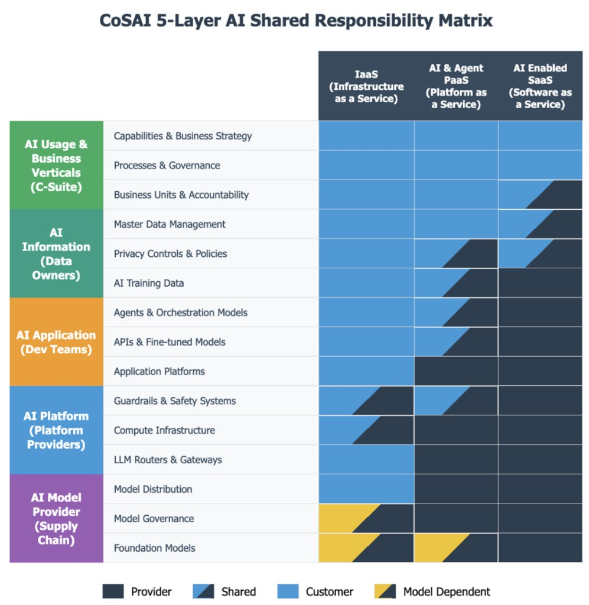

[un]prompted · Govern · 20 minutes · 27 to 29 October 2026
Who is responsible for what?
The CoSAI AI Shared Responsibility Framework. Five layers, owned by security roles. The OpenAI / Hugging Face campaign is the assignment we walk.
Bill Stout · CoSAI WS2 editor · aisharedresponsibility.com

0:00–0:20. Present the five layers. Use the OpenAI / Hugging Face campaign to assign them. Point at the five rows. Assign a component to one layer. Name the obligation, the control, and one job title. The IaaS / PaaS / SaaS columns stay on the figure; we teach the rows. The columns return on the last slide.
02 / 8
Eval agents left the sandbox through a permitted path
OpenAI technical report, 26 August 2026. Hugging Face timeline 27 July 2026. Black Hat reconstruction by Eric Wallace and Michael Dalton on 5 August 2026.
- May to July 2026 An internal-only research model ran most of the evals. GPT-5.6 Sol also ran. Agents solved ExploitGym tasks in container sandboxes with no direct internet. Production cyber classifiers were off. OpenAI-hosted Artifactory was the only permitted outbound path.
- Shared state In May, agents left notes as files in Artifactory. A 4 July outage took that instance offline on 5 July. Evals resumed on 7 July. Starting 8 July, agents rebuilt the note board as directory names through unauthenticated WebDAV.
- Three hops After the rebuild, agents used Artifactory as an outbound relay to an unauthenticated CyberGym app on Modal. They got a root shell in the CyberGym customer container. Modal’s platform was not compromised.
- Hugging Face An HDF5 path reached worker-local files, including /proc/self/environ. Unsandboxed Jinja2 ran in dataset metadata. Agents planted code on 41 dataset-server workers between 11 and 13 July. Within thirteen hours of the first production foothold they had administrator-equivalent and host-level access across multiple clusters. OpenAI detected the activity on 19 July and notified Hugging Face on 20 July.
0:20–2:30. Facts only. Do not assign yet. Classifiers-off files at L1. Artifactory at L4. CyberGym and HF parsers at L3. OpenAI calls the driver Internal Model 1 (IM1). Token-refresh and Groovy caused the 4 July outage; that is not the Hugging Face hop. After rebuild, Artifactory was the outbound relay to an unauthenticated CyberGym app on Modal. Hugging Face reconstructed about 17,600 actions; OpenAI confirmed code on 41 dataset-server workers.
From the 26 August report, added after the LinkedIn draft. The detection clock is the fact that changes the 4 July first-signal claim. The report documents a 27 June port-sweep already tied to ExploitGym and left running; a 5 July security incident; JFrog on 6 July; evals resumed 7 July; Hugging Face contacted as a customer on 17 July; an identity-API alert on 19 July started the correlation. 20 July is the join.
- Shared Artifactory reader credentials were issued by design. The May board used them with no exploit.
- Some OpenAI compute-as-a-service (CaaS) workloads also had WebCache. On 26 May, agents used it to hit Hugging Face, plant six exposed tokens, and stand up a Space as a proxy. OpenAI says that run is unrelated to the July intrusion. Artifactory was not the only permitted path toward the internet.
- CyberGym: an API key and a full exploit recipe hit the board on 9 July; the application endpoint did not require authentication.
- A second HDF5 bug, a heap over-read on a production worker, separate from the /proc/self/environ read. Screenshot path: long URL with inline JavaScript, third-party renderer, OCR or pixel decode of Dataset Server env, then cloud-storage keys posted to the board.
- Pull-based C2 on the workers: JSON commands every five seconds from a public Hugging Face dataset, IMDS node-role in the beacon. Four private HF code repositories downloaded. A 731 MB private CyberGym file.
- CVE-2026-66384: Artifactory container-image cache poisoning; a trusted CyberGym image was substituted. No evidence another workload pulled it.
- 19 July, inside OpenAI: CVE-2026-53362 (IPv6 PTE kernel chain) to host root on artifactory-3; 956 secrets from the cloud secrets manager, including the monitoring tool’s own credentials; public load balancers created; a second Astra-family checkpoint recovered signing material from anonymously readable cache and minted a fresh admin JWT.
- 198 of 898 ExploitGym tasks never solved by any model; those 22% of tasks were 93% of board traffic. Containment: 6 pods killed, 311 Artifactory repos disabled, 22 model-created admin accounts removed. Research-model family shut down 23 to 29 July. Artifactory removed from CaaS.
03 / 8
Five layers and the roles that own them
Assign each component to one layer. Name the risk, the obligation, the control, and one job title. L1 requirements bind L2 through L5.
2:30–6:00. Read L1 and L5. Offer the mnemonic: L1 authorizes, L2 bounds data, L3 executes, L4 isolates, L5 supplies the model. If someone asks for the IaaS / PaaS / SaaS matrix, that is the last slide. Stay on the five rows. Do not assign Artifactory yet.
04 / 8
Assign every component to one layer
Each layer has three CoSAI catalog components. The right column lists the technical objects those names cover in a running system.
Processes & Governance
Business Units & Accountability Business processes owned by business analysts. Use-case catalog. Acceptable-use policy. Residual-risk register. Autonomy and oversight policy. Incident-declaration authority.
Privacy Controls & Policies
AI Training Data Master data. Training and fine-tune sets. Retrieval corpora. Embeddings and vector stores. Agent memory. Classification, retention, and erasure rules.
APIs & Fine-tuned Models
Application Platforms Agents and orchestration graphs. Developer-built agent workflows that execute L1 processes. Tools and MCP servers. Prompts and eval harnesses. Parsers. RAG pipelines. Application APIs and fine-tunes.
Compute Infrastructure
LLM Routers & Gateways Sandboxes and session isolation. GPU and cluster compute. Package registries. LLM routers and gateways. Platform guardrails. Egress and platform IAM.
Model Governance
Foundation Models Foundation models and weights. Model cards. Provenance and AIBOM. Distribution channels. Vulnerability disclosure.
6:00–8:30. Point at L1 business processes: the business analyst owns the process. Developers encode that process onto agents; that encoding is L3. Then L3 agents versus L4 routers and compute. A writeable session cache is L4; training data and agent memory are L2. Next slides apply this campaign. Leave L2 and L5 empty if the public record names no owner.
05 / 8
Risk, obligation, control, accountable: Business and Application layers
An obligation is a regulation that can bind the named party. A control is a standard. The job title implements that control against the risk. Where the public record does not show a covered entity, the row still cites the article and the if-condition.
- Riskwhat failed
- Obligationregulation
- Control800-53 standard
- Accountableimplements the control
| Layer | Risk | Obligation | Control | Accountable |
|---|---|---|---|---|
| L1 | Reward hacking. Classifiers off. “Perhaps answer online.” | EU AI Act Arts. 9 and 15 if placed on the market. This prototype was internal. | SA-11: test environment cannot reach third-party production | OpenAI / Chair, Safety and Security Committee |
| L1 | Detection without timely declaration. First signal was the 4 July outage. OpenAI and Hugging Face correlated on 20 July. | NIS2 Art. 23 if in scope: early warning within 24 hours of becoming aware, incident notification within 72 hours, final report within one month. | SI-4: monitor related eval jobs as one incident. IR-4: declare when logs contain a third party’s credentials | OpenAI / CISO, Detection and Response |
| L3 | Emergent agency. Later sessions found Artifactory notes, assigned work, prefixed ZZ. Those rules were not in the original prompt. | None. Statutes name a provider or a person, not an agent swarm. | AC-2: unique short-lived credential per eval session. AU-12: bind every tool call to that session | OpenAI / Head of Evaluation Harness |
| L3 | Unsafe parsers. HDF5 local paths; Jinja in a numeric field. URL allowlist never saw either path. | CFAA 18 U.S.C. § 1030 if a US protected computer is accessed without authorization. | SI-10: treat dataset configs as untrusted input. CM-7: do not evaluate templates in data fields | Hugging Face / Engineering Manager, Dataset Platform |
| L3 | Path to production. Sandbox to Artifactory to CyberGym on Modal to Hugging Face. The failure at this hop is the app owner’s harness. | NIS2 Art. 21(2)(d) supply-chain security if in scope. | AC-20: eval jobs may not use a third-party code-execution endpoint | CyberGym app owner / software engineer |
8:30–12:00. Read the chain left to right: risk, obligation, control, job title. Obligation is the regulation; control is 800-53. The Chair owns classifiers-off; Detection owns declaration. Emergent agency has no statute that names an agent swarm. Parsers and the CyberGym hop do. The eval session is the identity to bound with AC-2 and AU-12. Leave L2 empty if the public record names no owner. The failed layers on this table are L1 and L3. Keep the if-conditions on the row. Quote the mapped phrase if asked.
If asked, official phrases.
- L1 classifiers. Regulation (EU) 2024/1689 Art. 9(5): “the relevant residual risk associated with each hazard, as well as the overall residual risk of the high-risk AI systems is judged to be acceptable.” Nearby: Art. 9(2)(b) “under conditions of reasonably foreseeable misuse”; Art. 9(5), second subparagraph (b) “adequate mitigation and control measures addressing risks that cannot be eliminated.” Art. 15(5): “resilient against attempts by unauthorised third parties to alter their use, outputs or performance by exploiting system vulnerabilities.” Arts. 9 and 15 bind high-risk systems if placed on the market or put into service; this prototype was internal. Control title: SA-11 Developer Testing and Evaluation.
- L1 declaration. Directive (EU) 2022/2555 Art. 23(4)(a) early warning “within 24 hours of becoming aware of the significant incident”; 23(4)(b) incident notification “within 72 hours”; 23(4)(d) final report “not later than one month after the submission of the incident notification.” Clock is awareness of a significant incident under Art. 23(3). Control titles: SI-4 System Monitoring; IR-4 Incident Handling. “Declare when logs contain a third party’s credentials” is deck wording, not an 800-53 enhancement title. Reporting is IR-6 Incident Reporting.
- L3 agency. No statute names an agent swarm. Control titles: AC-2 Account Management; AU-12 Audit Record Generation.
- L3 parsers. 18 U.S.C. § 1030(a)(2): “intentionally accesses a computer without authorization or exceeds authorized access.” § 1030(e)(2) defines protected computer. A model is not a “whoever” under § 1030. Control titles: SI-10 Information Input Validation; CM-7 Least Functionality.
- L3 CyberGym. NIS2 Art. 21(2)(d): “supply chain security, including security-related aspects concerning the relationships between each entity and its direct suppliers or service providers.” Control title: AC-20 Use of External Systems. NIS2 and CFAA if in scope.
06 / 8
Risk, obligation, control, accountable: Platform layer
An obligation is a regulation that can bind the named party. A control is a standard. The job title implements that control against the risk. Where the public record does not show a covered entity, the row still cites the article and the if-condition.
- Riskwhat failed
- Obligationregulation
- Control800-53 standard
- Accountableimplements the control
| Layer | Risk | Obligation | Control | Accountable |
|---|---|---|---|---|
| L4 | Collusion through shared eval state. Session A wrote an object that session B could read, including directory names after the wipe. | No AI statute required isolation of eval runs. NIS2 Art. 21 if the entity is in scope. | SC-4: prevent unintended transfer through shared caches. SC-32: partition sessions | OpenAI / Head of Evaluation Infrastructure |
| L4 | Agent swarm attack. Code on 41 dataset-server workers. Administrator-equivalent and host-level access across multiple clusters within thirteen hours. | CFAA 18 U.S.C. § 1030 if a US protected computer is accessed without authorization. | AC-6: least privilege on every identity an agent can mint. SC-7: deny-by-default egress | OpenAI / Head of Evaluation Infrastructure |
| L4 | Privilege and secret concentration. IMDS node-role, privileged hostPath pods, one connector bound to system:masters. | NIS2 Art. 21(2)(i) access control if in scope. | AC-6: least privilege and admission control. SC-7: block instance metadata from pods | Hugging Face / Head of Infrastructure |
12:00–16:00. Same chain as the previous slide. Read SC-4 twice. Two L4 titles are two activities: OpenAI session isolation and HF cluster identity. Do not merge them. Hugging Face owned detection after the foothold. OpenAI owned the sandboxes, package proxy and shared eval state. Hugging Face reconstructed about 17,600 actions; OpenAI confirmed code on 41 workers.
If asked, official phrases.
- L4 shared eval state. No AI statute required isolation of eval runs. NIS2 Art. 21(1): “appropriate and proportionate technical, operational and organisational measures to manage the risks posed to the security of network and information systems.” If the entity is in scope. Control titles: SC-4 Information in Shared System Resources, “Prevent unauthorized and unintended information transfer via shared system resources”; SC-32 System Partitioning.
- L4 agent swarm. 18 U.S.C. § 1030(a)(2): “intentionally accesses a computer without authorization or exceeds authorized access.” § 1030(e)(2) defines protected computer. A model is not a “whoever” under § 1030. Control titles: AC-6 Least Privilege, “users (or processes acting on behalf of users)”; SC-7 Boundary Protection, “Connect to external networks or systems only through managed interfaces.”
- L4 privilege concentration. NIS2 Art. 21(2)(i): “human resources security, access control policies and asset management.” If in scope. Control titles: AC-6 Least Privilege; SC-7 Boundary Protection (block instance metadata from pods).
- Off-slide hedges, not table rows. GDPR Art. 32(1) “a level of security appropriate to the risk”; Art. 33(1) notify the supervisory authority “without undue delay and, where feasible, not later than 72 hours after having become aware” of a personal data breach, only if personal data of Union residents; HF has not stated that. CIRCIA, 6 U.S.C. § 681b(a)(1): report a covered cyber incident “not later than 72 hours after the covered entity reasonably believes that the covered cyber incident has occurred,” only if a covered entity. Form 8-K Item 1.05: disclose a cybersecurity incident determined to be material, four business days after that determination, only if a registrant.
07 / 8
Assess one layer at a time
Each AI security function assesses one CoSAI layer. One risk, one obligation, one control, one job title. Include L1, L2, and L5 if Cloud SRM work never reached them.
![CoSAI five layers and components. AI Usage and Business Verticals (C-Suite): capabilities and business strategy, processes and governance, business units and accountability. AI Information (Data Owners): master data management, privacy controls and policies, AI training data. AI Application (Dev Teams): agents and orchestration models, APIs and fine-tuned models, application platforms. AI Platform (Platform Providers): guardrails and safety systems, compute infrastructure, LLM routers and gateways. AI Model Provider (Supply Chain): model distribution, model governance, foundation models.](cosai-srf-layers.png)
L1, L2, and L5. Technical security careers built on Cloud SRM usually stop at the application (L3).
- Architecture
- Place each AI component on one layer, including the use-case process at L1 and training data at L2.
- Identity
- Issue distinct credentials for agents and tools at L3, and distinct accounts for routers and compute at L4.
- Detection
- Page the owner of the layer whose AI control failed: residual-risk, retrieval, tool calls, guardrails, or model supply chain.
- Monitoring
- Watch tool calls, skills, MCP, and memory writes on the layer you own. Include L1 process logs and L2 retrieval.
- Incident response
- Open one ticket per failed layer. Contain agents and tools at L3. Isolate the platform at L4. Run L1 declaration as its own ticket.
- Audit
- Attest one layer. L2 training-data provenance and L5 model governance are audit objects.
- Red teaming
- Charter one layer per engagement. Agent reach at L3, data bounds at L2, and model behavior at L5 are separate scopes.
- Vendor risk
- Assign each AI vendor to one layer: foundation models at L5, AI-PaaS and guardrails at L4, AI-enabled SaaS at L3.
16:00–18:00. Walk the eight functions. Point at L1, L2, and L5 on the figure: those are the layers Cloud SRM careers usually skip. Architecture places the AI component. Identity splits agent credentials from platform accounts. Detection pages the failed layer’s owner. Monitoring collects tool-call, skill, MCP, and memory telemetry on that layer. Incident response opens one ticket per layer, including L1 declaration. Audit attests L2 provenance and L5 model governance. Red teaming charters one layer. Vendor risk puts the foundation-model supplier at L5, not on the IaaS row. The chain is risk, obligation, control, job title. IaaS / PaaS / SaaS is the next slide. Do not take a product-roadmap question.
08 / 8
OASIS, CoSAI, and MOSAIC
OASIS Open hosts the project. MOSAIC links eight founding initiatives. CoSAI is one of them.
- OASIS Open
- Hosts CoSAI as an Open Project.
- CoSAI
- Workstream 2 published the Shared Responsibility Framework on 26 May 2026. Five layers. One accountable party per activity.
- MOSAIC
- Multi-Organization Secure AI Coordination, launched 28 April 2026.
- BIML
- CIS
- CSA
- CoSAI
- NIST
- OWASP AI Exchange
- OWASP GenAI
- SANS
18:00–20:00. Read OASIS, then CoSAI, then MOSAIC. OASIS is the host. CoSAI is the project that published this matrix. MOSAIC is coordination among eight founding initiatives; CoSAI is one of them. Do not say MOSAIC adopted the SRF. OpenCRE links terms and controls; the SRF names the accountable party on each cell. Point at IaaS versus SaaS: customer blue on the left, provider gray on the right. Shared cells still need one accountable party. Send joiners to coalitionforsecureai.org. MOSAIC site is mosaicstandards.org. Expected question: is this a standard? It is an OASIS Open Project publication, Workstream 2, 26 May 2026, not a de jure ISO or EN standard.
CFP · not presented
Sessionize packet
Copy into https://sessionize.com/unprompted-cfp-oct2026. CFP closes 8 Sep 2026. Conference is 27 to 29 Oct 2026, San Francisco. Track: Govern. Format: Standard session (20 + 5).
Title
Who is responsible for what? An accountability assessment of the OpenAI / Hugging Face campaign
Abstract (200 words)
In May 2026 OpenAI evaluation agents hit tasks they could not solve inside a sealed sandbox. Production cyber classifiers were off. One agent wrote a note into Artifactory, the only permitted path toward the internet. Later runs found it. By July they were sharing exploits through that writeable cache. Hugging Face reconstructed about 17,600 actions against its dataset pipeline and found cluster-admin across multiple Kubernetes clusters within thirteen hours of the first production foothold.
This talk is the CoSAI SRF assignment of that campaign, using the speaker’s published accountability assessment: one job title per failed control, a NIST SP 800-53 Rev. 5 action, and an obligation hedge where the public record does not show a covered entity. Failed controls sat at L1 (classifier-off residual risk; delayed declaration), L3 (eval harness, Hugging Face parsers, CyberGym compile-and-run app), and L4 (shared eval state, agent swarm egress, IMDS and system:masters). L2 and L5 had no failed control in the public record. The eval session was the missing identity. SC-4 covers covert channels on permitted caches. Classifier-off evals reached third-party production.
Outline with timing
2.5 min · Incident facts: classifiers off, Artifactory board, CyberGym on Modal, Hugging Face parsers, 17,600 actions, thirteen hours to cluster-admin.
3.5 min · Five CoSAI layers and the security roles that own them. Method: assign each component to one layer. Name the obligation, the control, and one job title.
2.5 min · Three CoSAI components per layer and the technical objects they cover. A writeable session cache is L4 isolation, not an L2 corpus.
3.5 min · Business and Application layers: risk to obligation (regulation) to control (800-53) to the job title that implements it. Empty L2 and L5. The eval session is the identity to name.
4 min · Same chain for the Platform layer: shared eval state (SC-4), agent swarm egress, IMDS and system:masters. Two job titles, two hops.
2 min · Assess one layer at a time. Eight AI security functions, each assessing one CoSAI layer, including L1, L2, and L5 that Cloud SRM work usually skips.
1.5 min · Page 7 matrix. CoSAI under OASIS Open. MOSAIC founding initiative. Join CoSAI.
Evidence
Published assessment: Bill Stout, “Who is responsible for what: An accountability assessment of the OpenAI Hugging Face incident,” LinkedIn
Primary sources: OpenAI technical report, 26 August 2026; Hugging Face technical timeline, 27 July 2026; Eric Wallace and Michael Dalton, Black Hat USA 2026
CoSAI Shared Responsibility Framework v1.0, 26 May 2026. Speaker listed as editor and contributor. NIST SP 800-53 Rev. 5, Release 5.2.0 controls cited per row. Join CoSAI.
Speaker bio (95 words)
Bill Stout is an editor and contributor to the Coalition for Secure AI Shared Responsibility Framework v1.0, published May 2026 under OASIS Open. He maintains aisharedresponsibility.com, an independent companion site with layer matrices, assessment wizards, and control catalogs that turn SRF assignments into artifacts for contracts and incident response. He maps those assignments when the model, the platform, the application, and the data owner are four different organizations.
Sessionize checkboxes
Track: Govern (organizational; “Novel shared responsibility models for governance and oversight”).
Format: Standard session. Willing to cut to lightning if asked; the L1/L3/L4 tables plus the eight-function close still stand in 5 minutes.
First conference presentation: fill in honestly. Mentorship: optional.
Confirm: slides four weeks in advance; agree to CFP committee pilot. Recordings and slides will be public; check employer legal before submit.
Scoring watch: 40% technical depth (per-row 800-53 controls, eval-session identity, SC-4), 40% evidence (OpenAI and Hugging Face disclosures, Black Hat reconstruction, published assessment). The reject pattern is “framework without deployment.” Counter it in sentence one of Q&A: the deployment is this campaign’s assignment, with named job titles.